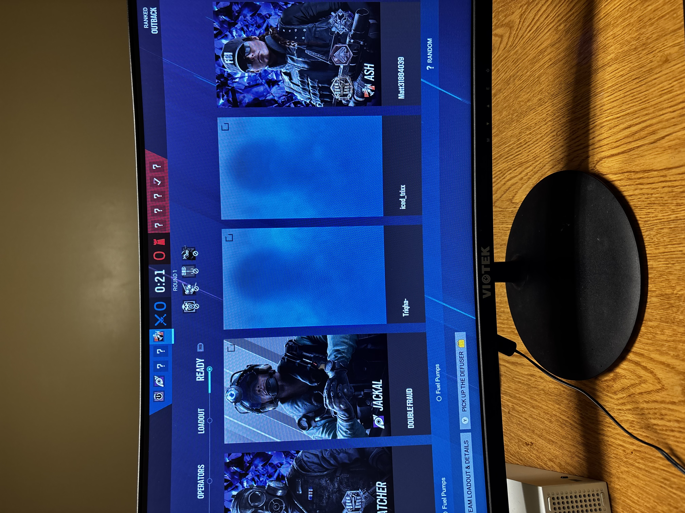
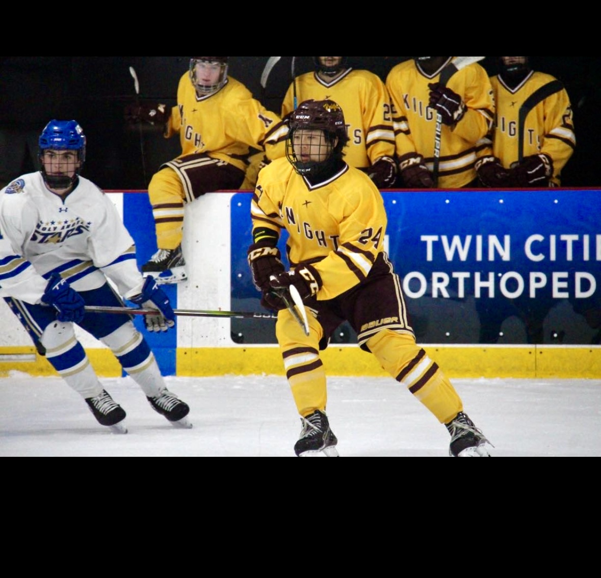

Video Games
Video games have always been a fun way for me to relax, connect with friends, and challenge myself in new ways. They help me develop strategic thinking and quick decision-making skills.
Golf

Golf is more than a sport for me—it's a lifelong passion that has taught me patience, focus, and the value of practice. I love spending time on the course with friends and family.
Hockey
Hockey has shaped my teamwork skills and competitive spirit. The fast pace and camaraderie of the game have always inspired me to push myself and support my teammates.